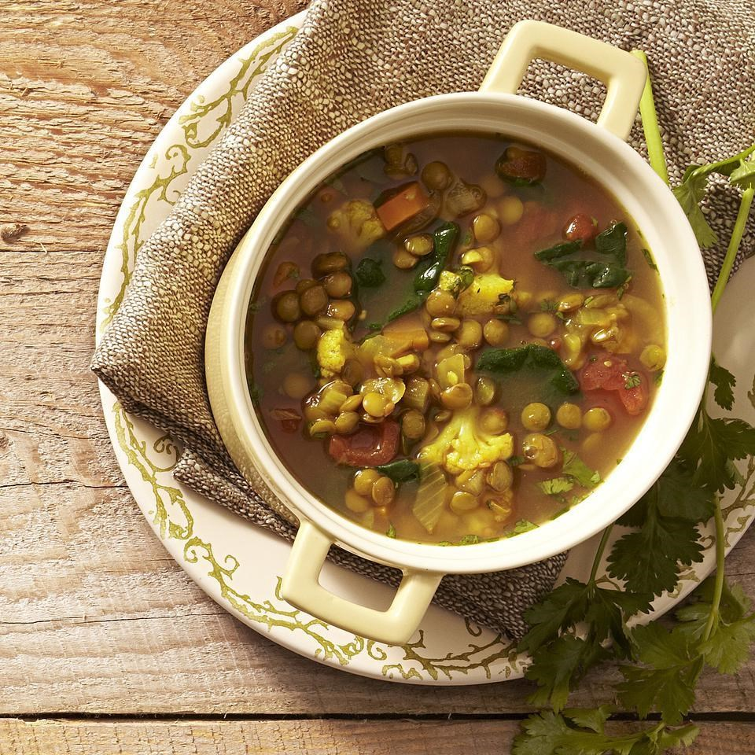
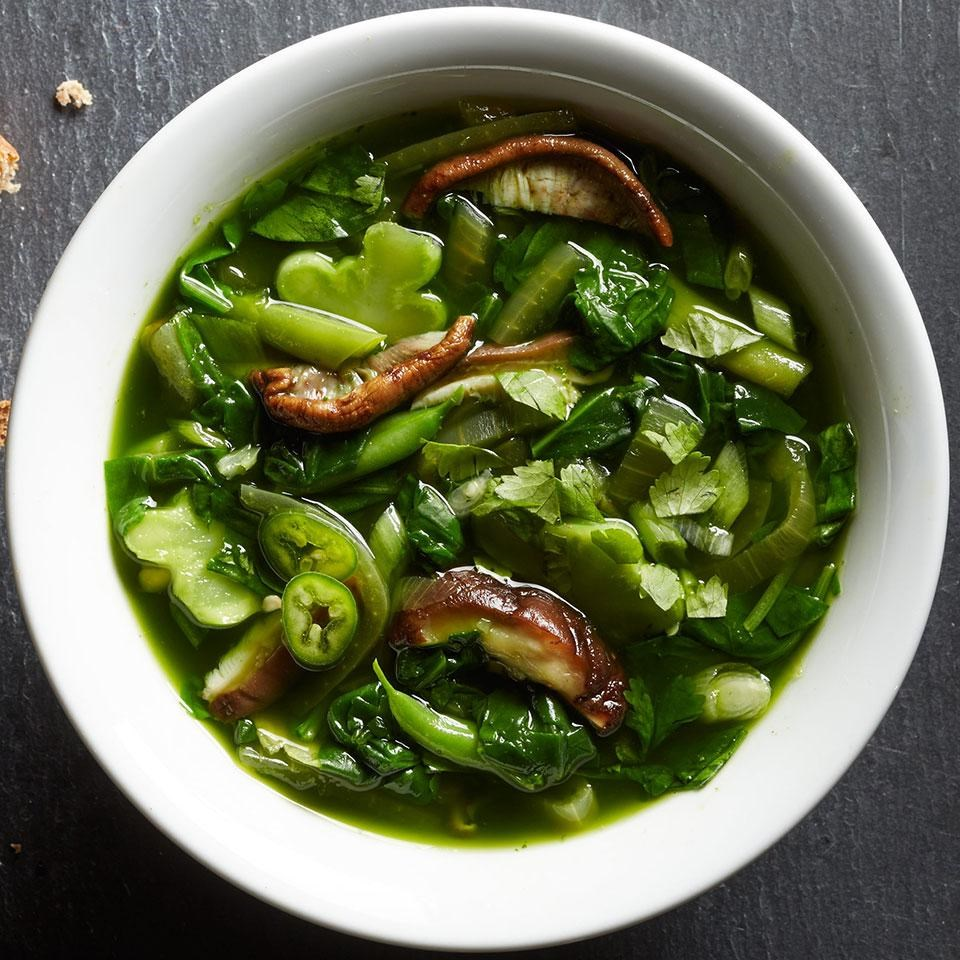

Melt butter in a deep soup pot set to medium heat. Add onions and cook until caramelized, 7-8...
Soups
Yellow Soup
Orange Soup

Brown Soup

Green Soup
Yellow soup
Sugar
Fat
Fiber
8 g
10 g
9 g
8 hours
4 port.
4/5
Ingredients:
Item 1
Item 2
Item 3
Item 4
Item 5
Combine chicken, onion, bell pepper, garlic, stock, diced tomatoes, tomato sauce, chiles, chili powder, oregano, and cumin in a 4-quart slow cooker. Season with salt and pepper.
Cook, covered, until chicken is cooked through on low 7 to 8 hours or on high 3 to 4 hours. Add squash and green beans and cook, covered, for 30 minutes. Remove chicken, discard bones and shred meat; return to slow cooker. Stir in lime juice and cilantro.
Serve topped with cilantro, jalapeños, and sour cream, with tortilla chips alongside.
Infromation about type 2 Diabetes
What is the difference between type 1 and type 2?
Type 1 diabetes is usually caused by an auto-immune reaction where the body’s defence system attacks the cells that produce insulin. People with type 1 diabetes produce very little or no insulin. People with this form of diabetes need injections of insulin every day to control the levels of glucose in their blood.
Type 2 diabetes accounts for at least 90% of all cases of diabetes. It is characterised by insulin resistance and relative insulin deficiency, either or both of which may be present at the time diabetes is diagnosed. People with type 2 diabetes can often initially manage their condition through exercise and diet.
What are the symptoms?
excessive thirst and hunger
frequent urination
drowsiness or fatigue
dry, itchy skin
blurry vision
slow-healing wounds
What if I am pregnant?
Gestational diabetes (GDM) is a form of diabetes consisting of high blood glucose levels during pregnancy. It develops in one in 25 pregnancies worldwide and is associated with complications to both mother and baby. GDM usually disappears after pregnancy but women with GDM and their children are at an increased risk of developing type 2 diabetes later in life.
Tips and tricks
1. Healthy food choices
According to the American Diabetes Association, start by choosing foods that are low in refined carbohydrates (like sugar and flour) and emphasizing vegetables, whole grains, whole fruit, beans, lean meats (like chicken and fish), and low-fat dairy products. The next part of this strategy is portion control — eat the right amount for a healthy diet and weight control.
2. Eat regularly
Resist eating huge meals once or twice a day. Instead, space your food intake throughout your waking hours by having smaller, more frequent meals and planned snacks at regular intervals, which can help keep your blood sugar on an even keel.
3. Exercise regularly
Doctors usually recommend that people do aerobic exercises — those that make the heart work, such as cycling or jogging — but not everyone can, for various reasons. You should discuss this with your doctor to see what type of exercise works best for you.
4. Check your blood glucose
How often you check your blood glucose depends on both you and your doctor. Whatever your personalized plan involves, you should maintain that routine. By checking your blood glucose, you can become aware of what affects your levels, and may be able to catch problems before they get out of hand.
5. Take your medication
It may sound like an obvious rule, but some people don’t take their medication as prescribed. Also be sure to take only those drugs that have been prescribed for you and you alone, and in the doses and frequency prescribed for you.
6. Stay informed
While much of the scientific information and the latest research may be hard to understand, try to keep track of any health reports of new or changing treatments for type 2 diabetes. Stay informed, and don’t hesitate to ask your healthcare team if progress you hear about in the news might apply to you.